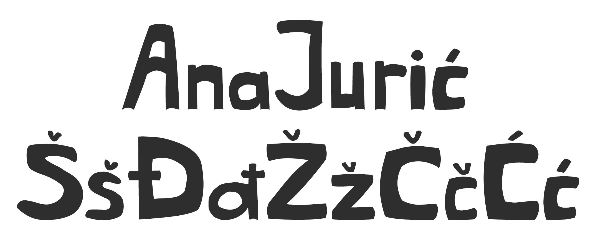
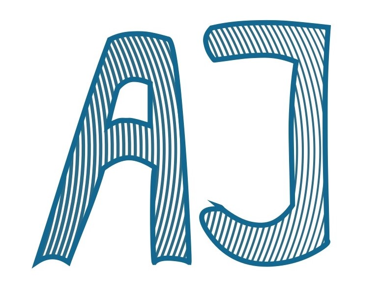
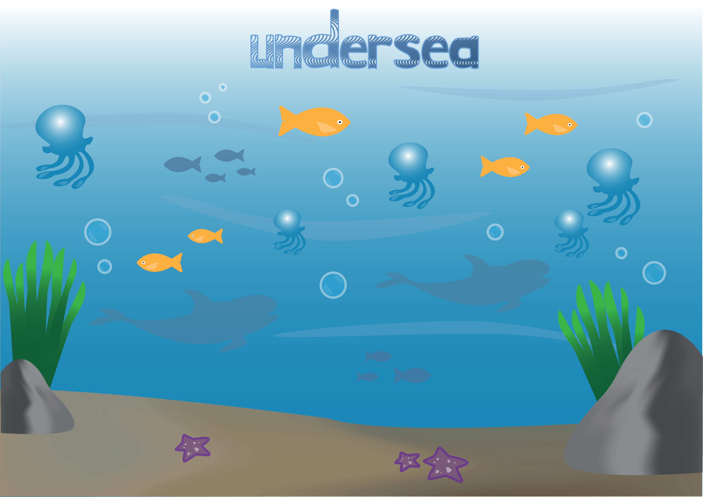
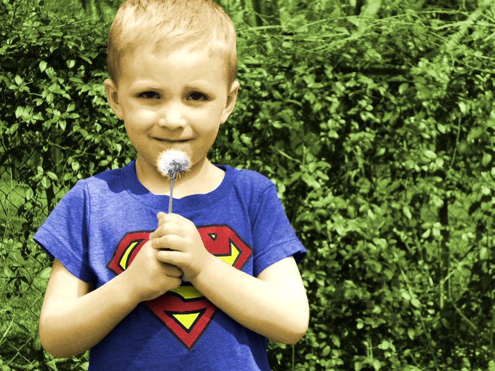
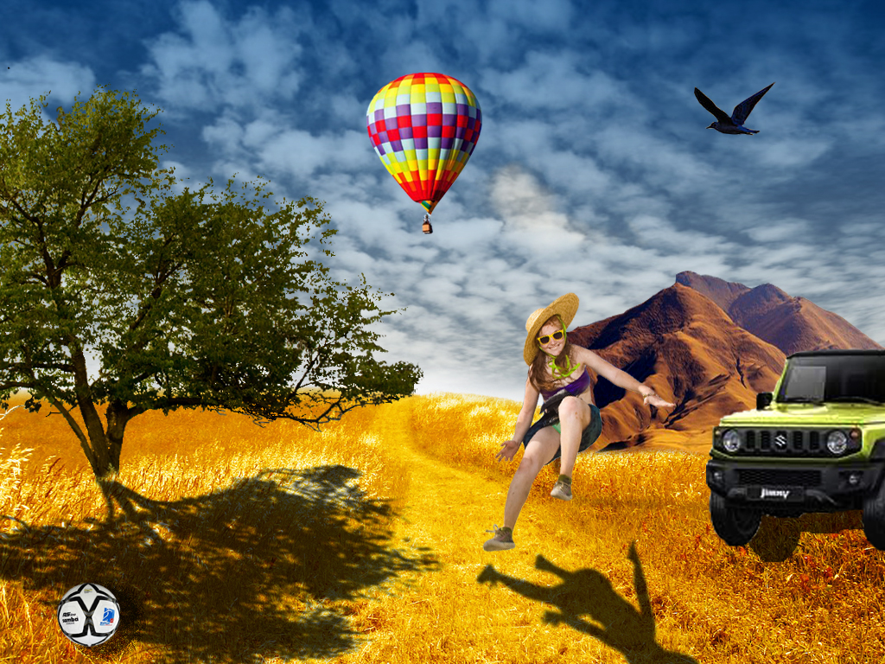
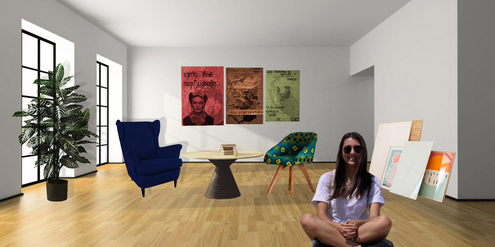
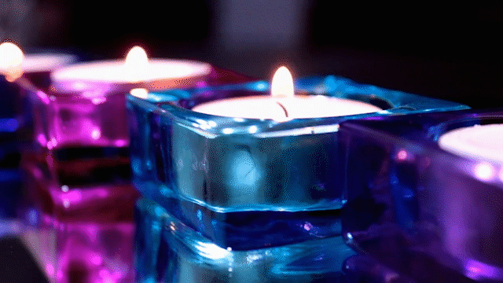

U ovoj vježbi zadatak je bio stvoriti vlastiti font. Trebalo je nacrtati sve slovne znakove vlastitog imena i prezimena i znakove hrvatske abecede: Š, š, Č, č, Ć, ć, Đ, đ, Ž, ž.

2. vježba - Bezierova krivulja
U ovoj vježbi okušali smo se u crtanju Bezierovih krivulja pomoću koordinatnog sustava, zatim kloniranje krivulje pomoću Blend opcije između prve i posljednje te smo izradili masku od teksta (inicijala).

3. vježba - Crtanje objekata u Illustratoru
Ovom vježbom svladali smo crtanje zatvorenih objekata, multipliciranje i transformacije, kao i rad sa slojevima i grupiranje objekata.
4. vježba - Složeni objekti u Illustratoru
Kroz ovu vježbu pobliže smo upoznali kako nacrtati složenije objekte u Illustratoru. Također, koristili smo različite gradijente (linearni, radijalni i Mesh), transparenciju te multipliciranje objekata.
1. projektni zadatak - vektorska grafika
Tema: flora i/ili fauna podmorja. U ovom projektnom zadatku objedinili smo sve ono naučeno iz prethodnih vježbi iz vektorske grafike. Kreirala sam vlastiti font i umnožila krivulje alatom Blend. U projektu sam koristila i crtanje objekata krivuljom, grupiranje, transformacije, maskiranje, upotreba gradijenta kao i swatch boja, transparencije...

Piksel grafika
5. vježba - Tehnike retuširanja fotografija
U ovoj vježbi naučili smo tehnike retuširanja na fotografiji. Prošli smo kroz uklanjanje pozadinskih šumova zamućivanjem, kloniranje, kopiranje većih područja, lokalno posvjetljivanje ili tamnjenje te globalnu korekciju tonova.
6. vježba – Koloriranje
Kroz ovu vježbu naučili smo o tehnikama koloriranja crno-bijelih fotografija. Tako smo prošli kroz faze kolorizacije: selektiranje područja, spremanje selekcija kao novih kanala te kreiranje layera koje se povežu s kanalima.

7. vježba – Fotomontaža
U ovoj vježbi svladali smo tehnike selektiranja različitih tipova elemenata kao i selekcije uz pomoć kanala. Također, imali smo priliku raditi i s korekcijama boja te izradom sjena.

2. projektni zadatak - piksel grafika
Za ovaj projekt bilo je potrebno kreirati sliku kao kompoziciju više fotografija koristeći tehnike retuširanja, fotomontaže i koloriranja. Uz sve to, za bolji dojam, koristili smo i maske, sjene, transparencije...

Video/web
8. vježba - Stvaranje kinemagrafa
Zadatak ove vježbe bio je iz originalnog videa stvoriti gif. Trebali smo odrezati video te dodati statičnu sliku.

9. vježba - Obrada videa, zvuka i teksta
U ovoj vježbi prošli smo kroz faze uređivanja videa kao npr. izrezivanje, brisanje zvuka, dodavanje efekata (editiranje boja, ubrzavanje, usporavanje, rotacija, prozirnost...) kao i dodavanje teksta i zvuka.
.jpg)
.jpg)
.jpg)
.jpg)
.jpg)
.jpg)